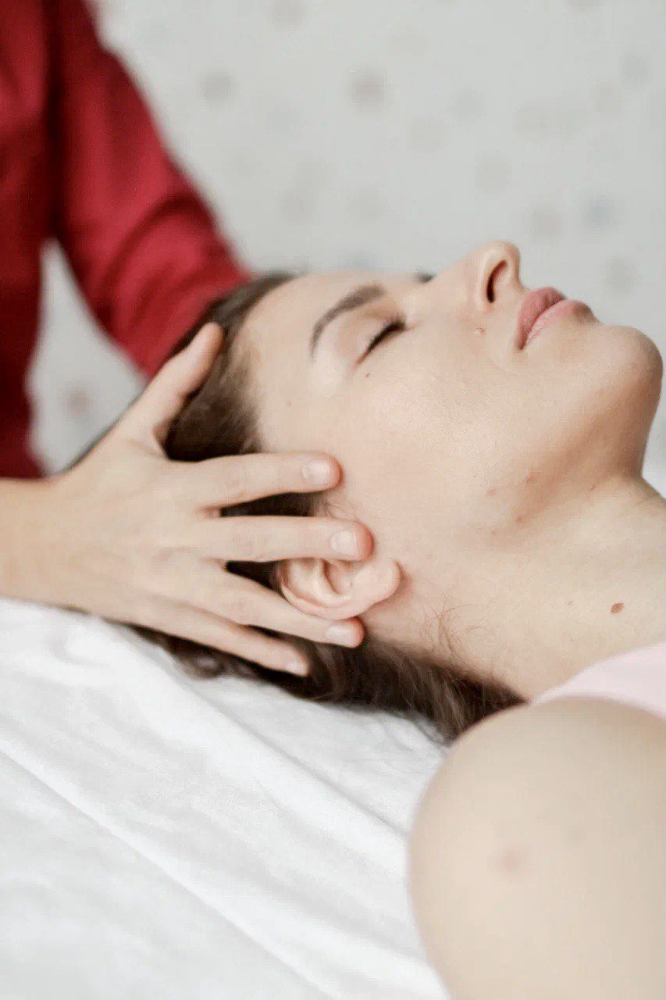
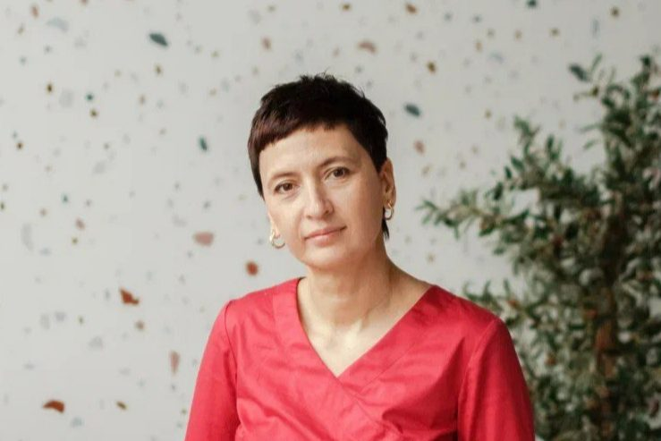

Уже тринадцать лет я провожу оздоровительные сеансы биодинамики и Рэйки, чтобы вам стало легче жить вашу непростую жизнь. Перед сеансом мы говорим о том, что вас беспокоит. Возможна удалённая работа.

Древние и современные, безопасные и эффективные методы. Очно в Анталье и в Москве, онлайн для всего мира.
ПодробнееРэйки это моя любовь. Я не только практикую сама, но и обучаю. Все ступени: первая, вторая и мастерская.
ПодробнееЯ создатель игры «Прикосновение Рэйки». Веду «Активацию здоровья» и «Шахматы Мистиков».
Подробнее
Меня зовут Юлия ОздеМир. Я работаю с людьми больше тринадцати лет и только делаю вид, что лечу коленки. По правде говоря, я работаю с людьми, которые находятся на грани.
Это не те, кто просто ищет обезболивание. Это те, кто больше не может жить по-старому и готов пройти через боль, страх и внутренние сломы к чему-то подлинному.
Если вы на грани, я рядом. Но легко не будет.
Я придерживаюсь честности и глубокого уважения к боли. Никакого спасательства, никакого давления. Я не даю готовых решений, гарантий и обещаний, но сопровождаю в том, что действительно важно.
Работаю с тем, что стоит за симптомом. Часто это связано с родом.
Час работы и неделя сопровождения после. Очно и онлайн.
ОткрытьВсё, что нужно современному человеку для самопомощи.
ОткрытьМоя авторская игра об исцелении, энергии и тишине.
ОткрытьКурсы из трёх, пяти и десяти сеансов, групповые дистанционные сеансы.
ОткрытьЮля, спасибо за дистанционные сеансы. После второго сеанса прошли боли в суставах, которые досаждали почти год. Стала чувствовать себя энергичнее и бодрее, в голове ясность.Наталья, Москва, 47 лет